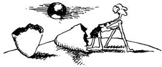

Running and Being, The Total Experience
"Where have all the heroes gone? They've gone with the simplicities and the pieties and the easy answers of another era. But that may not be all bad . . . not if our lack of such easy heroes can be an indication of the maturity of our age: a realization that every man has come into his own and has the capacity of making a success of his own life, of being able to say, 'I have found my hero and he is me.' "
These are the words of Dr. George Sheehan . . . runner, philosopher, writer, cardiologist. (Of the latter Sheehan says, "A cardiologist is a doctor who isn't intelligent enough to be a general practitioner.')
A man with a sense of humor, a sense of place, and a sense of self. We're very happy to excerpt from his latest effort, Running and Being, The Total Experience, by Dr. George Sheehan copyright © 1978 by George A. Sheehan, M.D., and reprinted by permission of Simon and Schuster, a division of Gulf and Western Corp.
I propose to you that human enterprises succeed because they are absolutely rational or because they are just as absolutely absurd. Science is a success, but then so is religion. Knowledge succeeds, but so does faith. We usually act when something can be proven. But we act with equal frequency when it cannot.
Just so are there two types of successful fitness programs. One is rational, practical, physiological; the other non-rational, mystical, and psychological. One is obligatory; the other voluntary. One aimed at changing the person to fit the lifestyle; the other aimed at changing the lifestyle to fit the person. One is utilitarian; the other creative. One is work; the other play.
The first is successful because it is concerned with the result; the other because it is concerned with the process.
In one instance, the exercising person is satisfied with Dr. Cooper's minimal daily requirements; in the other, he is dissatisfied with his own maximum daily capabilities. In the first, there is a purpose (the product, which is fitness), but little or no meaning in how it is attained. In the second, there is meaning in every movement, but no purpose beyond the action itself; fitness is merely a by-product. The first pursues Wan ambition; the second pursues a dream.
The first program is for unfit, 'out-of-shape people with their backs to the wall. They know what they want to do, but are no longer able to do or enjoy it. They have finally and irrevocably had enough of how they feel and look and live out their lives. They are now ready to repent of past physical sins.
You would think that such sensible decisions come easily. Nothing could be further from the truth. People just do not do things because those things are good for them. And are even less inclined to do so when they enjoy doing the opposite. People accept the rational, practical, physiological only when it dawns on them that life any other way is a waste. Only then will they agree to a program which to them is a mindless, inconvenient, and boring use of their time.
The other program is for unhappy people who find that it is life that is mindless, inconvenient, and boring. Common-sense programs are of no help here. Only something that is non-rational, mystical, and psychological can benefit them. Only something that is spontaneous and creative and playful will be effective. These people are looking for no less than an alternate way of living. Looking for a leisure-time activity that will involve them completely and give them a new lifestyle.
My fitness program succeeded because it was absurd. It was nonsense for someone my age to decide to become an athlete. Purely preposterous to concentrate the intensity and involvement that I once felt for the life of a physician into the life of the distance runner. Ridiculous to make running my vocation and medicine my avocation. But then my fitness pro gram was never a fitness program. It was a campaign, a revolution, a conversion. I was determined to find myself. And, in the process, found my body and the soul that went with it.
For me, medicine was an illusion that had failed. I was seeking a new world, where I could live and create my own drama, and not play with the meaning of life. I found it in running.
So when you see a jogger out on the roads, you can never be quite sure what is going on in his or her head. Whether the reason for running is reasoned and practical and altogether a matter of just getting it done. Or, on the other hand, whether this childlike foolishness is the focal center of the runner's day. And running is the answer to the crucial question: How do you want to live the rest of your life?
We jog, play tennis, cycle, swim, hike, hunt, ride horses, or whatever because they have to do with the quality of our lives rather than the quantity. "I know only two things," a student said to Rollo May. "One, I will be dead someday; two, I am not dead now. The only question is what I shall do between those points."
Sport and play and exercise are essential to that doing, that being, that becoming. They are vital to the process of maximizing ourselves and reaching the top of our physical powers. Jogging or whatever our sport is, therefore, is the way we move from actuality toward our potential, toward becoming all we can be.
You are your only friend. The only protector of your body and its beauty. The only defender of your play and its delights. The only guardian of your childhood and its dreams. The only dramatist and actor in your unique, never-to-be-repeated living of your life.
Rise to that challenge. Live your own life. Success is not something that can be measured or worn on a watch or hung on the wall. It is not the esteem of colleagues, or the admiration of the community, or the appreciation of patients. Success is the certain knowledge that you have become yourself, the person you were meant to be from all time.
That should be reward enough . . . but best of all is the fun while you are doing it.
|
 |
|
|